IDA真机调试安卓so文件
IDA真机调试安卓so文件
简要
看了网上很多的IDA真机调试安卓的文章，感觉很多步骤没有必要，这里整理一下最简单的实现安卓真机调试的步骤，以便以后参考，以 2021NCTF easy_mobile题目举例
步骤
- 首先需要一个root 后的手机，用数据线连接电脑，并且开启USB调试
- 电脑安装好
adb - 运行
adb devices观察设备是否已经连接
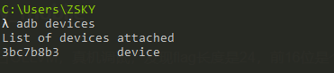
来到IDA安装目录的文件夹，将 用
adb push 电脑源目录 安卓的目的目录将dbgsrv对应的文件放到手机文件的某个目录下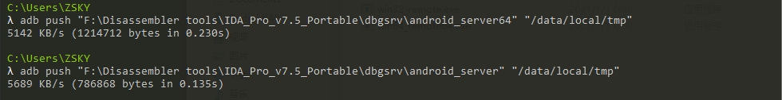
运行
adb shell然后su切换到root权限，来到对应的目录下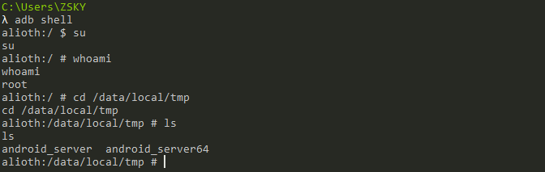
给
android_server和android_server64加可执行权限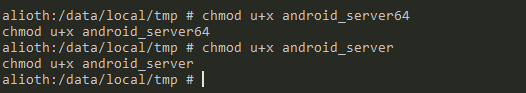
观察此题check_flag函数在
libnative-lib.so文件中，为arm64架构
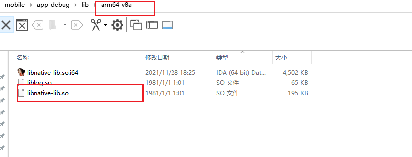
运行对应的server, 这里运行的是
./android_server64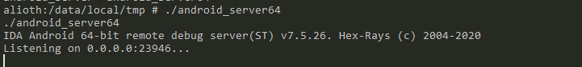
端口转发
adb forward tcp:23946 tcp:23946
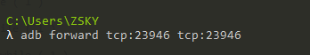
- 打开IDA，拖入对应的so文件，选择
Remote ARM Linux/Android debugger
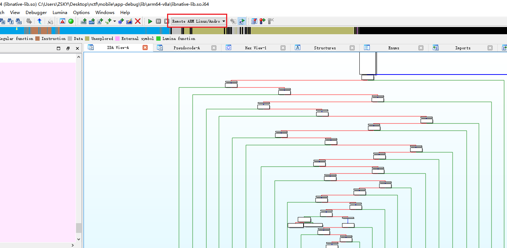
11、Debugger -> Process options,填写localhost，端口保持默认
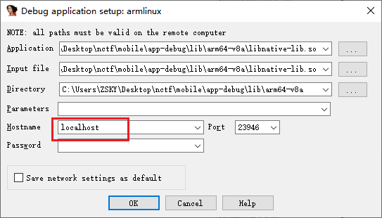
12、对应的手机上安装对应的APK文件
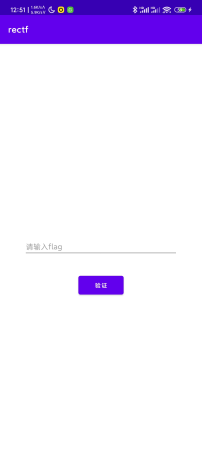
13、IDA Debugger -> Attach to process, 选择对应的进程
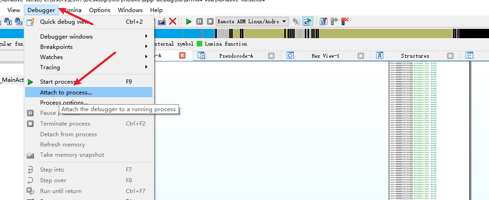
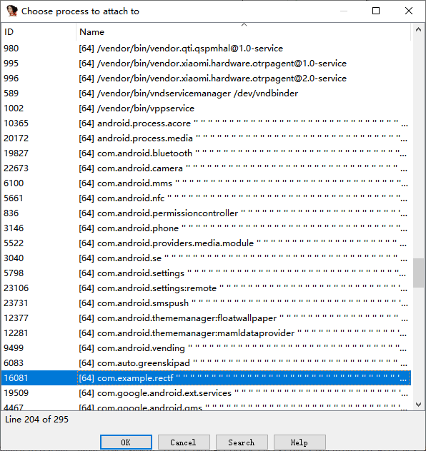
14、在Java_com_example_rectf_MainActivity_checkflag 函数那里下断点，手机输入flag，点验证，IDA断下
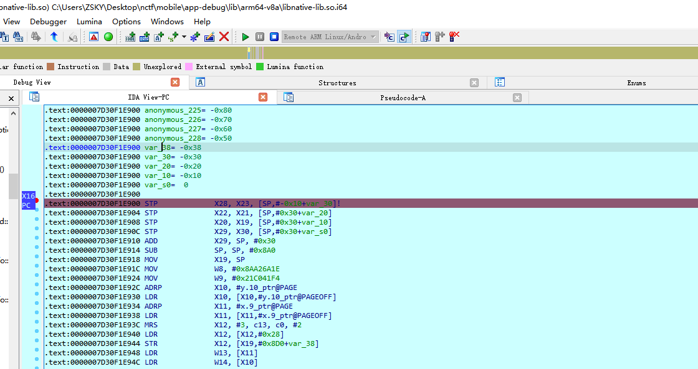
关于这个题的详细题解可以参考 https://zzzzsky.com/2021/11/29/NCTF2021_RE_WP/
参考文章
https://www.cnblogs.com/xuan52rock/p/11010304.html
本博客所有文章除特别声明外，均采用 CC BY-NC-SA 4.0 许可协议。转载请注明来自 zsky's Blog！
 微信
微信 支付宝
支付宝
评论